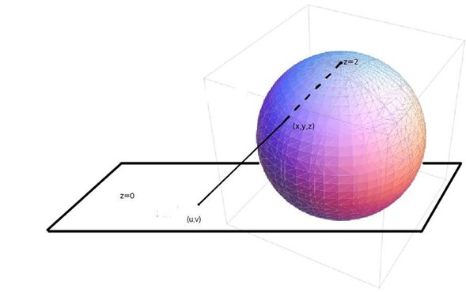

Descripción
La proyección estereográfica es una proyección de perspectiva planar, vista desde un punto en el globo opuesto al punto de tangencia. Proyecta puntos en un esferoide directamente sobre un plano y es la única proyección acimutal conforme. La proyección se utiliza más habitualmente en orientaciones polares para mapas topográficos de regiones polares. Los más conocidos son los mapas de proyección estereográfica polar universal (UPS) que muestran áreas situadas por encima de los 84° norte y por debajo de los 80° sur que no estén incluidas en el sistema de coordenadas de la proyección universal transversa de Mercator (UTM).
